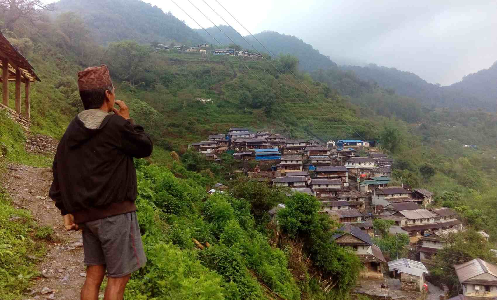

वडा कार्यालयको कार्य योजनाबारे गाउँवासीलाई सहभागी गराई छलफल गर्नका लागि खबर गर्दै लमजुङको घाम्राङका कटुवाल चन्द्रबहादुर गुरुङ ।
तस्बिर जनक श्रेष्ठ । रासस
कटुवाल प्रथाबारे संक्षिप्त जानकारी
कटुवाल प्रथा
(१) सामाजिक, सांस्कृतिक वा प्रशासनिक आधिकारिकता भएको व्यक्तिले अह्राए अनुसार सूचनाको सार्वजनिक
संप्रेषण गर्ने व्यक्तिलाई नेपाली परम्परागत समाजमा कटुवाल भनिएको र त्योसँग सम्बद्ध प्रथालाई कटुवाल
प्रथा भनिएको देखिन्छ । नेपालमा भौगोलिक तथा भूसांस्कृतिक क्षेत्र अनुसार कटुवाल प्रथाको विभिन्न स्वरुप
रहेको भए तापनि सूचनाको सार्वजनिक उद्घोषण (घोक हाल्ने) जिम्मेवारी कटुवालको साझे विशेषता पाइन्छ
।कटुवाल प्रथा मानव समाजको त्यो प्राचीन समयबाट सुरु भएको देखिन्छ, जब मानवले सूचना संप्रेषणको महत्त्व
बुझिसकेको त थियो तर सूचना संप्रेषणका लागि विशेष प्रविधिको विकास भने भइसकेको थिएन । सूचना संप्रेषणको
लागि व्यक्ति विशेषलाई जिम्मेवार बनाउने र सो जिम्मेवारी पूरा गरेको पारिश्रमिक स्वरुप वार्षिक रुपमा
बाली (अन्न) दिने गरी यो सुरु भएको देखिन्छ । लुगा सिलाउने, भाँडा बनाउने वा अन्य अत्यावश्यक कार्यका
लागि जसरी पद्धति बसालिएको थियो, कटुवाल प्रथाको पनि सोही अनुसारकै सामाजिक संरचना रहेको देखिन्छ ।
समाजका लागि अत्यावश्यक सबै कर्म वा क्रियाकलापलाई सामाजिक एवं सांस्कृतिक संस्थानीकरणको अवयव नै बनाउने
त्यो युगको पद्धति अनुसार नै कटुवाल प्रथा पनि चलेको थियो । संस्थानीकरणमा कुनै पनि कार्य गर्ने व्यक्ति
वा समूह (वा हाम्रो जस्तो समाजमा निश्चित जात पनि हुन सक्ने) को सामाजिक सोपान (Social hierarchy) र
पारिश्रमिकको स्रोत कस्तो हुने भन्ने कुरा महत्त्वपूर्ण रहन्छ । कटुवाल कस्तो भूमिकामा थिए भन्ने
विश्लेषण गर्दा यी पाटाहरु पनि विचार गर्नु पर्छ ।
सामाजिक सोपानको कुरा गर्दा कटुवालहरु समाजको माथिल्लो श्रेणीका मानिसहरु थिएनन् । मेरो हालसम्मको
अनुसन्धानमा नेपालमा प्राचीन समयमा ब्राह्मण तथा राजन्य वर्गका क्षत्रीयले कटुवालको जिम्मेवारी लिएको
देखिएन । कटुवालको जिम्मेवारी समाजको सर्वोच्च वर्ण वा वर्ग वा जातलाई किन दिइएन भने उनीहरुको तत्कालीन
समाजमा सूचना वा ज्ञानका उत्पादकका रुपमा आवश्यक परेका थिएनन् । सामाजिक संरचना अनुसार त्यो कार्य त
पहिल्यै एउटा निश्चित वर्ण वा वर्ग वा जातको मुख्य जिम्मेवारीका रुपमा निश्चित भइसकेको थियो । सार्वजनिक
उपदेशक (Public preacher), प्रेरक वक्ता (Motivational speaker), व्याख्याता (Interpreter) आदिको
जिम्मेवारी पनि समाजमा तय भइसकेपछिको समयमा कटुवाल प्रथा सुरु भएको जस्तो देखिन्छ । कटुवाल प्रथाको
विश्लेषण गर्दा दैनन्दिन समाज व्यवहार वा राजकीय सूचना संप्रेषणका लागि आवश्यक परेको सन्देश संवाहक
भूमिकाको लागि मात्र कटुवाल चाहिएको थियो भन्ने देखिन्छ । त्यसैले ती आजको सञ्चार सिद्धान्तका
परिप्रक्ष्यमा वैचारिक नेता (Opinion leaders) भनिनेजस्तो भूमिकामा थिएनन् । सामाजिक सोपानमा माथिल्लो
तहमा रहेका व्यक्ति वा संस्थाको आदेशमा निश्चित सूचनाको संप्रेषण मात्र उनीहरुको जिम्मेवारी थियो ।
अन्तरव्यक्ति सञ्चार हुँदै नहुने त होइन, तर कटुवालको प्राथमिक जिम्मेवारी कुनै सुविधाजनक स्थानबाट
मानिसहरुको ध्यानाकर्षण गर्दै चर्को स्वरमा सूचना सुनाइदिनु थियो । ध्यानाकर्षण गर्नका लागि बाजा बजाउने
जस्ता क्रियाकलाप प्रभावकारी हुने हुनाले समाजमा बाजा बजाउने जिम्मेवारी जुन समुदाय वा जातलाई थियो,
सोही समुदाय वा जातको व्यक्ति नै कटुवाल तोकिने बढी सम्भावना रहन्थ्यो । चर्को स्वरमा कराउन सक्ने, लामो
दूरी वा उकालो ओरालो यात्रा गर्न सक्ने जस्ता विशेषता पनि अवश्यै वाञ्छनीय थिए ।परम्परागत समाजमा
कटुवालको पारिश्रमिक पनि विभिन्न शिल्पी समुदाय वा जातकै जस्तो बालीघरे प्रथाबाट दिइने गरेको थियो ।
त्यो बेलाको सामाजिक संस्थानीकरणमा बालीघरे प्रथाले विभिन्न वर्ण वा वर्ग वा जातलाई अन्तरसम्बद्ध
बनाउँथ्यो र संस्थापन पक्षेका अभीष्ट अनुसार सामाजिक संरचनामा स्थिरताका लागि यो पनि एक औजार थियो । यो
कोणबाट हेर्दा पनि कटुवाल भनेको सेवक वा सहायक भूमिका मात्र थियो । सञ्चार प्रक्रियामा प्रयुक्त च्यानल
वा मिडियालाई गौण मान्ने र सामाजिक आर्थिक संरचना प्रधान मान्ने दृष्टिकोणसँग मिल्दोजुल्दो परिस्थिति
कटुवाल प्रथाको प्रारम्भमा पनि देखिन्छ । तर समयक्रममा राज्यको संरचना बलियो बन्दै जाँदा कटुवालको
पारिश्रमिक पनि राज्यका अन्य कर्मचारीको जस्तै जमीनमा अधिकार (बिर्ता) वा तलब हुने समय पनि आयो र त्यो
समयमा चाहिँ सामाजिक सोपानमा माथिल्लो श्रेणीमा रहेका वर्ण वा जातका मानिसहरुले पनि कटुवाल जागिर खाएको
देखिन्छ ।
(२) जुन समयमा कटुवाल प्रथा प्रारम्भ भयो, त्यो समयमा समाजमा अरु पनि सूचना सञ्चारका कर्ताहरु थिए र
एउटा विशेष जिम्मेवारीका लागि कटुवाल संयन्त्र चाहिएको थियो । सामाजिक, सांस्कृतिक तथा राजनीतिक सञ्चार
प्रणालीका अनेक अवयवहरु थिए । तीमध्ये एउटा अवयव कटुवालहरु थिए । धर्मोपदेश, नैतिक प्रेरणा, राजनीतिक वा
प्रशासनिक घोषणा आदिका लागि सामाजिक सोपानका माथिल्लो तहमा रहेका व्यक्ति, समूह वा जातलाई अधिकार
प्राप्त रहेको देखिन्छ । तर उनीहरुको सामाजिक सोपानले सर्वसाधारण लोक (जनता) सम्म पुगेर, धेरै जनाले
सुन्ने गरी, बाजा बजाउँदै तथा चिच्याई चिच्याई सूचना फैलाउन वाञ्छनीय नमानेपछि उपर्युक्त कार्यका लागि
कटुवाल चाहिएको थियो । सामाजिक, सांस्कृतिक वा प्रशासनिक आधिकारिकता भएको व्यक्तिले अह्राए अनुसार
सूचनाको सार्वजनिक संप्रेषण गर्नु कटुवालको मुख्य जिम्मेवारी थियो । कटुवाल प्रथा तत्कालीन समाजमा
समाजको आवश्यकता अनुसार संस्थानीकरण भएको थियो । कटुवाल प्रथा नभएको भए अर्को कुनै संयन्त्र समाजले
बनाउने थियो, राज्यले बनाउने थियो । तसर्थ कटुवालको के कस्तो योगदान रह्यो भन्ने कुरा विश्लेषणको लागि
समीचीन हो, तर कटुवाल नभएको भए सूचना सञ्चार नै हुने थिएन भन्नु समीचीन होइन । यो प्रथाबाट नभएको भए
अर्को कुनै पद्धति समाजले विकास गर्ने थियो । आवश्यकताले आविष्कारलाई डोर्याउने तथ्य यहाँ पनि लागू
हुन्छ ।